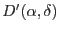
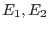
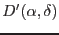
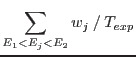
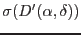
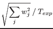

XMM-Newton Science Analysis System
evigweight (evigweight-1.7) [xmmsas_20170112_1337-16.0.0]
In the same way, constructing an image
 of the source
within the energy band 
may be done by calling evselect
(with withzcolumn=Y withzerrorcolumn=N) :
|  |
 |
 |
(9) |
|  |
|
 |
(10) |
This is directly proportional to the source brightness
(no need to divide by the exposure map), except for bad pixels and CCD gaps
(see Sect.3.9).
XMM-Newton SOC/SSC -- 2017-01-12